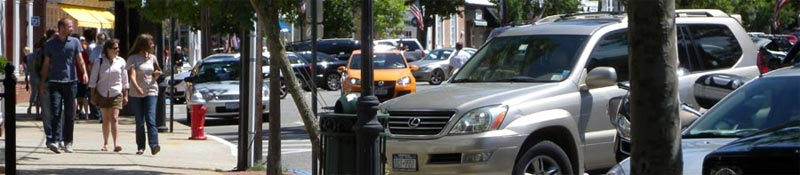

Hamptons Main Street is a half hour news magazine style show. The show can be seen Saturdays on Cablevision Channel 20 in Southampton and on the website Hamptons-Main Street.com.
Hamptons Main Street is a half hour news magazine style show. The show can be seen Saturdays on Cablevision Channel 20 in Southampton and on the website Hamptons-Main Street.com.

Hamptons Main Street is a 1/2 hour news magazine style show. The show can be seen Saturdays on Cablevision Channel 20 in Southampton and on the website Hamptons-Main Street.com. The segments will be a potpourri of the unique charm of Hamptons' Main Streets from Westhampton to Montauk. A highlight of each segment will be "Secrets of the Hamptons" which will spotlight unusual aspects of Hamptons' residents - i.e. local business. fashion and services that are found in the world renown Hamptons. Each segment will be available on a viral app on food, artists, health, beauty, cooking, money, decorating, relationships, and sports, all with a particular Hamptons slant.
Back